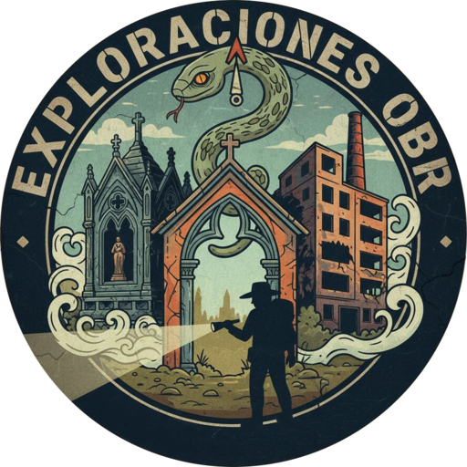

v6.1.83 (anuncio Juana + EVP tras interacción + pitch -530)
NO APARECERÁN AL TOCAR LA PANTALLA
IP SE CONVIERTE A ID AUTO
Pitch: tono base. Rate: velocidad normal (preview). AUDIO SCAN aplica 1.75-2.0x encima. Subir velocidad también sube tono — compensar bajando Pitch.